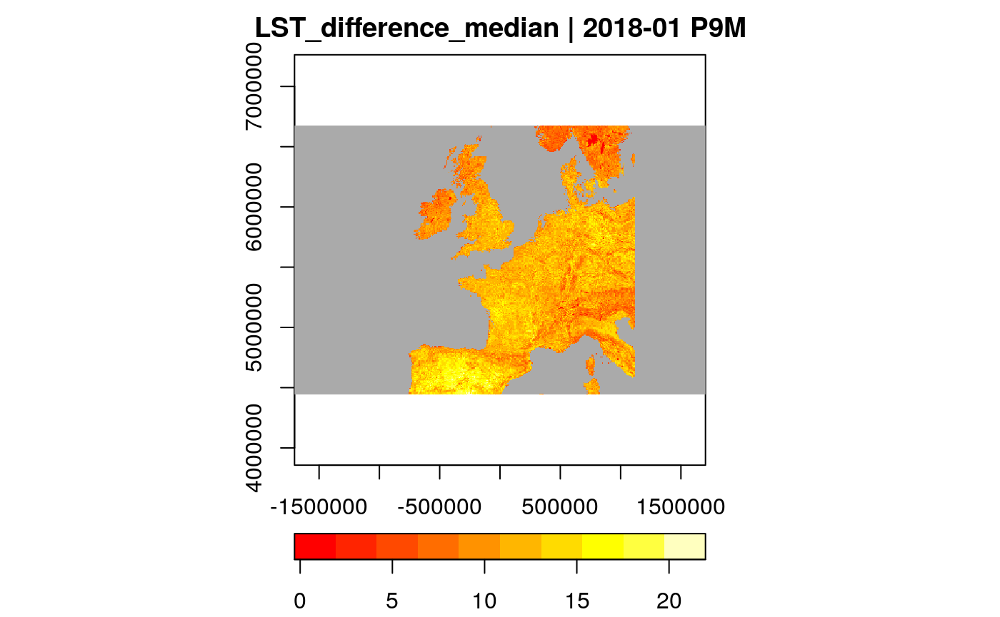
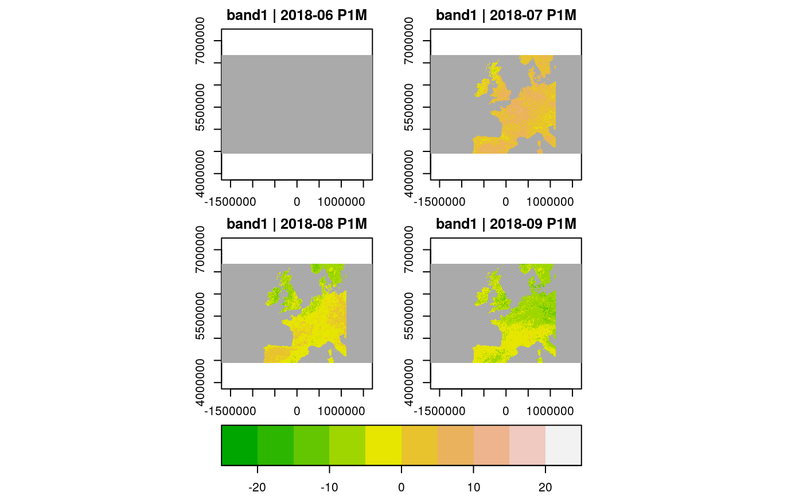

The gdalcubes R package aims at making the work with large collections of Earth observation (EO) imagery (e.g. from Sentinel 2) easier and faster. Typical challenges with these data such as overlapping images, different spatial resolutions of spectral bands, irregular temporal sampling, and different spatial reference systems become invisible to users by reading the data as a raster data cube and letting users define the shape of the cube (spatiotemporal extent, resolution, and spatial reference system). Working with EO imagery then becomes more interactive: going from “try my method on low resolution and get the result asap” to “apply my final method to the full resolution dataset over night” becomes straightforward.
This brief vignette illustrates basic ideas of the package. We will use satellite imagary from the Moderate Resolution Imaging Spectroradiometer (MODIS) that is small enough to process even on older machines. The imagery comes as a set of HDF4 files. We assume that you have successfully installed the gdalcubes R package. Please also make sure that your GDAL installation supports the HDF4 driver (e.g. with gdalcubes_gdalformats()).
In the following, we will follow a simple workflow by
We will use 8-daily land surface temperature from the MODIS product MOD11A2, covering western Europe (tiles v=13,14, h=03,04) from January to September 2018. The zip archive has approximately 600 megabytes. The code below downloads and unzips the data to the current working directory.
As a first step, we must combine the set of files for the first MODIS product (MOD11A2) in a single image collection. The image collection is a simple index, pointing to files and storing the spatial extent, spatial reference system, aquisition date/time of images and how files relate to image bands. The package comes with a set of predefined rules (called image collection formats), how this information can be extracted from filenames for selected EO products. A list of available collection formats including a short description can be printed with:
library(gdalcubes) collection_formats() ## CHIRPS_v2_0_daily_p05_tif | Image collection format for CHIRPS v 2.0 daily ## | global precipitation dataset (0.05 degrees ## | resolution) from GeoTIFFs, expects list of .tif ## | or .tif.gz files as input. [TAGS: CHIRPS, ## | precipitation] ## CHIRPS_v2_0_monthly_p05_tif | Image collection format for CHIRPS v 2.0 monthly ## | global precipitation dataset (0.05 degrees ## | resolution) from GeoTIFFs, expects list of .tif ## | or .tif.gz files as input. [TAGS: CHIRPS, ## | precipitation] ## ESA_CCI_SM_ACTIVE | Collection format for ESA CCI soil moisture ## | active product (version 4.7) [TAGS: Soil ## | Moisture, ESA, CCI] ## ESA_CCI_SM_PASSIVE | Collection format for ESA CCI soil moisture ## | passive product (version 4.7) [TAGS: Soil ## | Moisture, ESA, CCI] ## GPM_IMERG_3B_DAY_GIS_V06A | Collection format for daily ## | IMERG_3B_DAY_GIS_V06A data [TAGS: Precipitation, ## | GPM, IMERG] ## L8_L1TP | Collection format for Landsat 8 Level 1 TP ## | product [TAGS: Landsat, USGS, Level 1, NASA] ## L8_SR | Collection format for Landsat 8 surface ## | reflectance product [TAGS: Landsat, USGS, Level ## | 2, NASA, surface reflectance] ## MxD09GA | Collection format for selected bands from the ## | MODIS MxD09GA (Aqua and Terra) product [TAGS: ## | MODIS, surface reflectance] ## MxD10A2 | Collection format for selected bands from the ## | MODIS MxD10A2 (Aqua and Terra) v006 Snow Cover ## | product [TAGS: MODIS, Snow Cover] ## MxD11A1 | Collection format for selected bands from the ## | MODIS MxD11A2 (Aqua and Terra) v006 Land Surface ## | Temperature product [TAGS: MODIS, LST] ## MxD11A2 | Collection format for selected bands from the ## | MODIS MxD11A2 (Aqua and Terra) v006 Land Surface ## | Temperature product [TAGS: MODIS, LST] ## MxD13A2 | Collection format for selected bands from the ## | MODIS MxD13A2 (Aqua and Terra) product [TAGS: ## | MODIS, VI, NDVI, EVI] ## MxD13A3 | Collection format for selected bands from the ## | MODIS MxD13A3 (Aqua and Terra) product [TAGS: ## | MODIS, VI, NDVI, EVI] ## MxD13Q1 | Collection format for selected bands from the ## | MODIS MxD13Q1 (Aqua and Terra) product [TAGS: ## | MODIS, VI, NDVI, EVI] ## MxD14A2 | Collection format for the MODIS MxD14A2 (Aqua ## | and Terra) product [TAGS: MODIS, Fire] ## PlanetScope_3B_AnalyticMS_SR | Image collection format for PlanetScope 4-band ## | scenes [TAGS: PlanetScope, BOA, Surface ## | Reflectance] ## Sentinel1_IW_GRD | Image collection format for Sentinel 1 Level 1 ## | GRD data as downloaded from the Copernicus Open ## | Access Hub, expects a list of file paths as ## | input. The format works on original ZIP ## | compressed as well as uncompressed imagery. ## | [TAGS: Sentinel, Copernicus, ESA, SAR] ## Sentinel2_L1C | Image collection format for Sentinel 2 Level 1C ## | data as downloaded from the Copernicus Open ## | Access Hub, expects a list of file paths as ## | input. The format works on original ZIP ## | compressed as well as uncompressed imagery. ## | [TAGS: Sentinel, Copernicus, ESA, TOA] ## Sentinel2_L1C_AWS | Image collection format for Sentinel 2 Level 1C ## | data in AWS [TAGS: Sentinel, Copernicus, ESA, ## | TOA] ## Sentinel2_L2A | Image collection format for Sentinel 2 Level 2A ## | data as downloaded from the Copernicus Open ## | Access Hub, expects a list of file paths as ## | input. The format should work on original ZIP ## | compressed as well as uncompressed imagery. ## | [TAGS: Sentinel, Copernicus, ESA, BOA, Surface ## | Reflectance] ## Sentinel2_L2A_THEIA | Image collection format for Sentinel 2 Level 2A ## | data as downloaded from Theia. [TAGS: Sentinel, ## | ESA, Flat Reflectance, Theia]
In this case, MxD11A2 is the correct format for our datasets. Internally, collection formats are defined in relatively simple JSON files, presets for other products will be added continuously.
To create the image collection, we must pass a list of our files and the collection format to the create_image_collection() function. The code below finds all files as character vector of GDAL datasets, which then can be passed as first argument to create_image_collection(). The second argument here referes to the image collection format and the third argument provides the name of the output image collection file (which is simply an SQLite database). The collection format also knows that bands are stored as subdatasets in the HDF files.
img_col_file = tempfile(fileext=".db") files = list.files(file.path(dest_dir,"MOD11A2"), pattern=".hdf$", full.names = TRUE) create_image_collection(files, "MxD11A2", img_col_file) ## A GDAL image collection object, referencing 140 images with 8 bands ## Images: ## name left ## 1 /tmp/RtmpKgLLYJ/MOD11A2/MOD11A2.A2018001.h17v03.006.2018011145329 -20.00000 ## 2 /tmp/RtmpKgLLYJ/MOD11A2/MOD11A2.A2018001.h17v04.006.2018011145438 -15.55724 ## 3 /tmp/RtmpKgLLYJ/MOD11A2/MOD11A2.A2018001.h18v03.006.2018011145428 0.00000 ## 4 /tmp/RtmpKgLLYJ/MOD11A2/MOD11A2.A2018001.h18v04.006.2018011145326 0.00000 ## 5 /tmp/RtmpKgLLYJ/MOD11A2/MOD11A2.A2018009.h17v03.006.2018018034330 -20.00000 ## 6 /tmp/RtmpKgLLYJ/MOD11A2/MOD11A2.A2018009.h17v04.006.2018018034246 -15.55724 ## top bottom right datetime ## 1 60 50 0.00000 2018-01-01T00:00:00 ## 2 50 40 0.00000 2018-01-01T00:00:00 ## 3 60 50 20.00000 2018-01-01T00:00:00 ## 4 50 40 15.55724 2018-01-01T00:00:00 ## 5 60 50 0.00000 2018-01-09T00:00:00 ## 6 50 40 0.00000 2018-01-09T00:00:00 ## srs ## 1 +proj=sinu +lon_0=0 +x_0=0 +y_0=0 +R=6371007.181 +units=m +no_defs ## 2 +proj=sinu +lon_0=0 +x_0=0 +y_0=0 +R=6371007.181 +units=m +no_defs ## 3 +proj=sinu +lon_0=0 +x_0=0 +y_0=0 +R=6371007.181 +units=m +no_defs ## 4 +proj=sinu +lon_0=0 +x_0=0 +y_0=0 +R=6371007.181 +units=m +no_defs ## 5 +proj=sinu +lon_0=0 +x_0=0 +y_0=0 +R=6371007.181 +units=m +no_defs ## 6 +proj=sinu +lon_0=0 +x_0=0 +y_0=0 +R=6371007.181 +units=m +no_defs ## [ omitted 134 images ] ## ## Bands: ## name offset scale unit nodata image_count ## 1 DAY_VIEW_TIME 0.00 0.100 hrs 255.000000 140 ## 2 EMIS_31 0.49 0.002 0.000000 140 ## 3 EMIS_32 0.49 0.002 0.000000 140 ## 4 LST_DAY 0.00 0.020 K 0.000000 140 ## 5 LST_NIGHT 0.00 0.020 K 0.000000 140 ## 6 NIGHT_VIEW_TIME 0.00 0.100 hrs 255.000000 140 ## 7 QC_DAY 0.00 1.000 140 ## 8 QC_NIGHT 0.00 1.000 140
The created image collection has references to original images on disk and knows about the datetime, spatial extent, and coordinate reference system of images. The raster_cube() function creates a data cube from an image collection. This function expects up to three arguments:
If no data cube view is provided, a default cube that covers the whole extent of the collection at low resolution is created. The chunk size defaults to (16 x 256 x 256) pixels in time, y, and x directions. Below, we create a data cube with a default cube view and print some basic information about its dimensions and bands.
x = raster_cube(image_collection(img_col_file)) x ## A GDAL data cube proxy object ## ## Dimensions: ## low high count pixel_size chunk_size ## t 2018-01 2018-10 4 P3M 1 ## y 4447802.07906609 6671703.11859914 413 5384.74827974103 256 ## x -1703607.03338081 1703607.03338081 633 5382.64465523162 256 ## ## Bands: ## name offset scale nodata unit ## 1 DAY_VIEW_TIME 0.00 0.100 NaN hrs ## 2 EMIS_31 0.49 0.002 NaN ## 3 EMIS_32 0.49 0.002 NaN ## 4 LST_DAY 0.00 0.020 NaN K ## 5 LST_NIGHT 0.00 0.020 NaN K ## 6 NIGHT_VIEW_TIME 0.00 0.100 NaN hrs ## 7 QC_DAY 0.00 1.000 NaN ## 8 QC_NIGHT 0.00 1.000 NaN bands(x) ## name offset scale nodata unit ## 1 DAY_VIEW_TIME 0.00 0.100 NaN hrs ## 2 EMIS_31 0.49 0.002 NaN ## 3 EMIS_32 0.49 0.002 NaN ## 4 LST_DAY 0.00 0.020 NaN K ## 5 LST_NIGHT 0.00 0.020 NaN K ## 6 NIGHT_VIEW_TIME 0.00 0.100 NaN hrs ## 7 QC_DAY 0.00 1.000 NaN ## 8 QC_NIGHT 0.00 1.000 NaN dimensions(x) ## $t ## $t$low ## [1] "2018-01" ## ## $t$high ## [1] "2018-10" ## ## $t$count ## [1] 4 ## ## $t$pixel_size ## [1] "P3M" ## ## $t$chunk_size ## [1] 1 ## ## ## $y ## $y$low ## [1] 4447802 ## ## $y$high ## [1] 6671703 ## ## $y$count ## [1] 413 ## ## $y$pixel_size ## [1] 5384.748 ## ## $y$chunk_size ## [1] 256 ## ## ## $x ## $x$low ## [1] -1703607 ## ## $x$high ## [1] 1703607 ## ## $x$count ## [1] 633 ## ## $x$pixel_size ## [1] 5382.645 ## ## $x$chunk_size ## [1] 256 srs(x) ## [1] "+proj=sinu +lon_0=0 +x_0=0 +y_0=0 +R=6371007.181 +units=m +no_defs"
Notice that raster_cube() will not run any computations besides deriving the shape of the output cube. Instead, it will return a proxy object that will not be evaluated until data must be actually read (e.g. when calling plot). This not only applies to data cubes from image collections but also for derived cubes (see further below). In most cases, however, users want to specify the extent and resolution manually. Above, the temporal resolution of the cube was 3 months whereas below, we define a custom data cube view with temporal resolution of one month.
srs="+proj=sinu +lon_0=0 +x_0=0 +y_0=0 +a=6371007.181 +b=6371007.181 +units=m +no_defs" MOD11A2.col = image_collection(img_col_file) v = cube_view(srs=srs, extent=MOD11A2.col, nx = 400, dt="P1M", aggregation = "mean") v ## A data cube view object ## ## Dimensions: ## low high count pixel_size ## t 2018-01 2018-09 9 P1M ## y 4447802.07906609 6671703.11859914 261 8520.69363805765 ## x -1703607.03338081 1703607.03338081 400 8518.03516690404 ## ## SRS: "+proj=sinu +lon_0=0 +x_0=0 +y_0=0 +a=6371007.181 +b=6371007.181 +units=m +no_defs" ## Temporal aggregation method: "mean" ## Spatial resampling method: "near" MOD11A2.cube = raster_cube(MOD11A2.col, v) MOD11A2.cube ## A GDAL data cube proxy object ## ## Dimensions: ## low high count pixel_size chunk_size ## t 2018-01 2018-09 9 P1M 1 ## y 4447802.07906609 6671703.11859914 261 8520.69363805765 256 ## x -1703607.03338081 1703607.03338081 400 8518.03516690404 256 ## ## Bands: ## name offset scale nodata unit ## 1 DAY_VIEW_TIME 0.00 0.100 NaN hrs ## 2 EMIS_31 0.49 0.002 NaN ## 3 EMIS_32 0.49 0.002 NaN ## 4 LST_DAY 0.00 0.020 NaN K ## 5 LST_NIGHT 0.00 0.020 NaN K ## 6 NIGHT_VIEW_TIME 0.00 0.100 NaN hrs ## 7 QC_DAY 0.00 1.000 NaN ## 8 QC_NIGHT 0.00 1.000 NaN
Besides the spatiotemporal extent, the resolution and the spatial reference system, the data cube view contains the two important parameters aggregation and resampling. Resampling here refers to how images are resampled in space during the warp operation. The temporal aggregation method defines how values for the same cell from different images are combined in the target cube. For example, a data cube with monthly temporal resolution will contain values from multiple images. Currently, possible values are first, last, min, max, mean, and median. These functions are evaluated per data cube pixel.
The package comes with a few operations on data cubes to (i) select bands (select_bands()), (ii) apply pixel-wise arithmetic expressions (apply_pixel()), (iii) reduce data cubes over space and time (reduce_time(), reduce_space()), apply a moving-window function over time (window_time()), (iv) apply an R function over chunks of a data cube (chunk_apply()), and (v) join bands of identically shaped data cubes (join_bands()). All of these functions produce a proxy data cube, storing the shape of the result cube but not any data. They all take a (proxy) data cube as first argument and can be chained. The following code demonstrates some of the operations and how data cubes can be plotted.
MOD11A2.bandselect = select_bands(MOD11A2.cube, c("LST_DAY","LST_NIGHT")) MOD11A2.daynight_difference = apply_pixel(MOD11A2.bandselect, "0.02*(LST_DAY-LST_NIGHT)",names = "LST_difference") MOD11A2.reduce = reduce_time(MOD11A2.daynight_difference, "median(LST_difference)") plot(MOD11A2.reduce, col=heat.colors, key.pos=1)

The result is the median day night surface temperature difference for all pixels between Jan and December 2018. Notice that no data is actually read until we call plot(), i.e. all operations again return proxy objects. Replacing the plot function with write_ncdf(MOD11A2.reduce, "test.nc") would write the result as a NetCDF file to disk.
Operations on data cubes are designed such that they can be used with the pipe operator. The following code for example derives monthly differences of land surface temperature, from June to September 2018. The window_time function here applies the simple time series kernel filter \(T_t - T_{t-1}\).
library(magrittr) # get the pipe v1 = cube_view(view=v, extent=list(t0="2018-06", t1="2018-09")) raster_cube(image_collection(img_col_file), v1) %>% select_bands(c("LST_DAY")) %>% apply_pixel("LST_DAY * 0.02") %>% # apply scale window_time(kernel=c(-1,1), window=c(1,0)) %>% plot(col=terrain.colors, key.pos=1, zlim=c(-25,25))

gdalcubes supports multithreaded evaluation of data cube operations. Calling gdalcubes_set_threads(n) will tell all following data cube operations to use up to n threads. Since worker threads are assigned to chunks of the data cube, the actual number of threads used is lower for cubes with less than n chunks.
This vignette presents a very simple example with a small dataset. Future vignettes will focus on (i) how user-defined R functions can be applied on data cubes, (ii) how to process larger datasets (Sentinel 2) with overlapping images from different spatial reference systems, and (iii) how to run gdalcubes in the cloud.